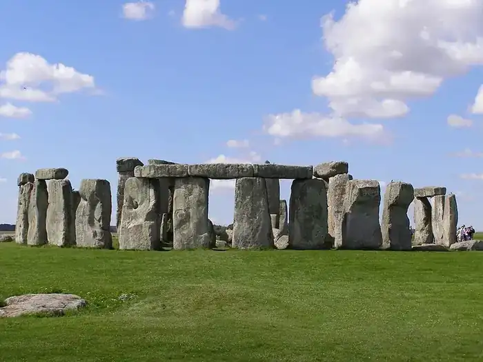

The claim
Archaeoacoustics asks what a site sounded like and what that meant. For Stonehenge the proposals are specific: that the circle's geometry would have produced reverberation and interference patterns, that certain positions were acoustically favoured for speech or ritual sound, and that the monument's design was partly an acoustic one.
Maps, diagrams and images


The most cited work is a 1999 study by Watson and Keating, who measured a half-scale replica in the USA and reported reverberation and echo effects inside the circle. A 2012 project at the University of Salford built a full-scale temporary replica and measured speech intelligibility, music and drumming inside it.
What the measurements show
The replica studies agree on the general picture: a stone circle is a reverberant space, with reflections and some focusing effects, and it changes the character of sound relative to open ground. Whether those effects were intended, exploited, or even noticed is a separate question, and it is the one the evidence does not answer.
The ruin problem is fundamental. Stonehenge today is missing roughly half its stones; the sarsen circle is incomplete, the bluestone horseshoe is partly gone, and we do not know what was on top. Every acoustic model has to assume a reconstruction, and different reconstructions give different answers. The site was also modified repeatedly over more than a thousand years, so 'the acoustics of Stonehenge' describes no single moment.
Documented: a stone circle measurably alters sound, with reverberation and reflections.
Documented: replica measurements exist, including a full-scale temporary build.
Contested: whether any of it was intended, and whether the design was acoustic rather than structural or astronomical.
The limit: the monument is a ruin, so the object measured is a hypothesis about the past, not the past itself.
The honest position: a real physical effect, an unresolved question of intent, and a site too damaged to settle it.
Why it is in the archive
Because it is the most careful of the 'ancient wisdom' claims — it uses real measurement, real replicas and published results — and it still cannot get past the same wall every claim in this collection hits: the evidence that would settle it no longer exists.
Open resources on this topic
- PapersOpen-access articles: DOAJ · PubMed Central · Internet Archive Scholar
- BooksPublic-domain and borrowable copies: Open Library · Project Gutenberg · Google Books · Internet Archive
Cite this page
Momin, S. (2026). Stonehenge Acoustics. The Larger World Archive. https://drsamonline.github.io/LARGE_GLOBE/stonehenge-acoustics.htmlMomin, Sohil. “Stonehenge Acoustics.” The Larger World Archive, 2026, https://drsamonline.github.io/LARGE_GLOBE/stonehenge-acoustics.html.Momin, Sohil. “Stonehenge Acoustics.” The Larger World Archive, 2026. https://drsamonline.github.io/LARGE_GLOBE/stonehenge-acoustics.html.@misc{stonehenge2026stonehenge,
author = {Momin, Sohil},
title = {Stonehenge Acoustics},
year = {2026},
howpublished = {The Larger World Archive},
url = {https://drsamonline.github.io/LARGE_GLOBE/stonehenge-acoustics.html},
note = {Last reviewed 20 November 2026}
}Last reviewed 20 November 2026 · Corrections policy · this page is not peer reviewed
Sources for this page
- Wikipedia, “Stonehenge” — the monument, its phases and its conditionen.wikipedia.org
- Wikipedia, “Archaeoacoustics” — the method and its limitsen.wikipedia.org
- Wikipedia, “Reverberation” — what the replica studies measureden.wikipedia.org
- Wikipedia, “Acoustic ecology” — sound as an archaeological questionen.wikipedia.org